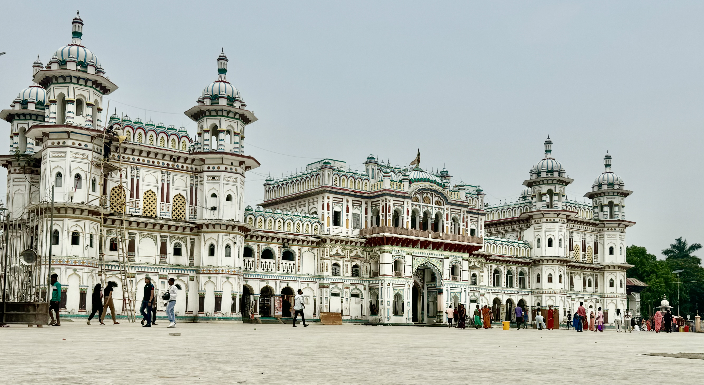
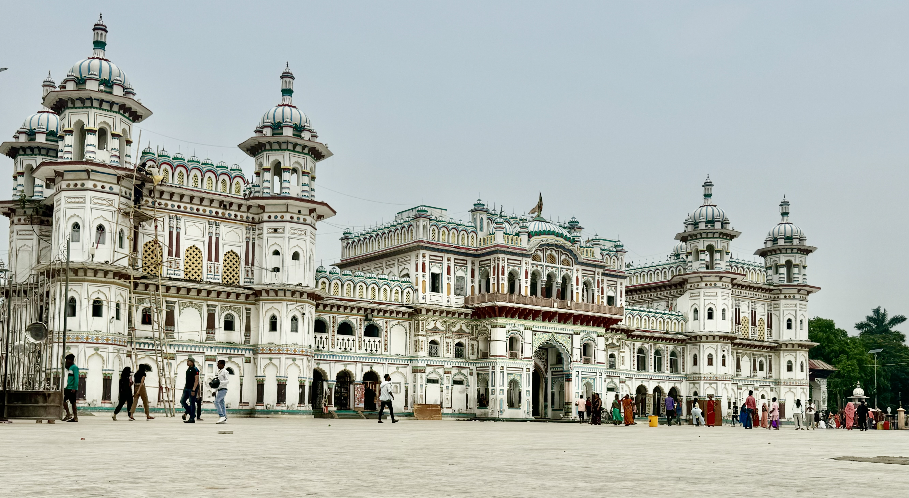

Living in a mountainous homeland, it would feel wrong not to embrace the chance to witness the majestic peaks that define our landscape. To capture that experience, we set out on the Mardi Trek—easily accessible and rich with breathtaking views that left a lasting impression.


 
